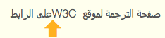
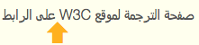

为什么我的浏览器会折叠拉丁字母和阿拉伯字母/希伯来字母之间的空格，如何修复这个问题？
代码示例中从右向左的文本在这里用大写字母表示，从左向右的文本用小写字母表示。
如果文本后面跟着一个行内元素，带有dir属性，并且含有空白字符，拉丁字母和阿拉伯字母/希伯来字母之间的空格可能会被折叠。
在以下的代码模式中，彩色矩形表示有问题的空格。（大写字母表示RTL文本，小写内容表示LTR。）
<p dir="rtl">RTL_TEXT <span dir="ltr">ltr_text </span>RTL_TEXT</p>
如果我们用阿拉伯字母和英文替换内容，上述代码会产生以下结果。

请注意，当从右到左的文本嵌入到从左到右的段落中时，也会出现这种效果。
如果前面的部分描述了你代码的样子，解决方案是删除行内元素结束标签前的所有空格，或者删除dir属性（如果合适的话）。
新的代码模式：
<p dir="rtl">RTL_TEXT <span dir="ltr">ltr_text</span> RTL_TEXT</p>
例如，在上面的例子里，把W3C后面的空格移到span的外面，会产生预期的结果。

在这种情况下，我们并不需要W3C周围的span元素来产生正确的显示顺序。省略属性或整个span元素也可以解决问题（尽管我们通常建议标记所有相反方向的文本）。
如果你想了解为什么会发生这种情况的技术细节时，可以阅读本节。
文本显示时的预期行为在HTML规范中没有详细描述，但在CSS规范中有描述。虽然本页面的示例没有用CSS，但同样的原则适用。以下内容摘自CSS文本模块第3版候选推荐标准：
任何紧跟在另一个可折叠空格之后的可折叠空格（即使该空格位于包含该空格的行内边界之外，只要这两个空格位于同一个行内格式化上下文中）都会被折叠，使其前进宽度为零。（它是不可见的，但保留了其软换行的机会，如果有的话。）
给定如下场景，其中颜色表示空格（U+0020）：
<ltr>a <rtl> B </rtl> c</ltr>
规范说A后面的空格被保留，B前面的空格被删除，B后面的空格被保留，C前面的空格被删除，这给我们留下：
<ltr>a <rtl>B </rtl>c</ltr>
然后根据Unicode双向算法进行渲染，最终结果是：
a Bc
请注意，A和B之间实际上有两个空格。嵌入级别可以表示如下：
00110
下面的框显示了代码示例，和代码在此页面上的实现。你可以测试你的浏览器的行为。所有例子的上下文都是从右到左的。垂直的橙色条表示空格字符的位置。
ARABIC <span dir="ltr">latin </span>ARABIC
صفحة الترجمة لموقع W3C على الرابط
ARABIC <span dir="ltr">latin </span> ARABIC
صفحة الترجمة لموقع W3C على الرابط
ARABIC <span dir="ltr">latin</span> ARABIC
صفحة الترجمة لموقع W3C على الرابط
ARABIC <span>latin </span>ARABIC
صفحة الترجمة لموقع W3C على الرابط
ARABIC<span dir="ltr"> latin</span> ARABIC
صفحة الترجمة لموقع W3C على الرابط